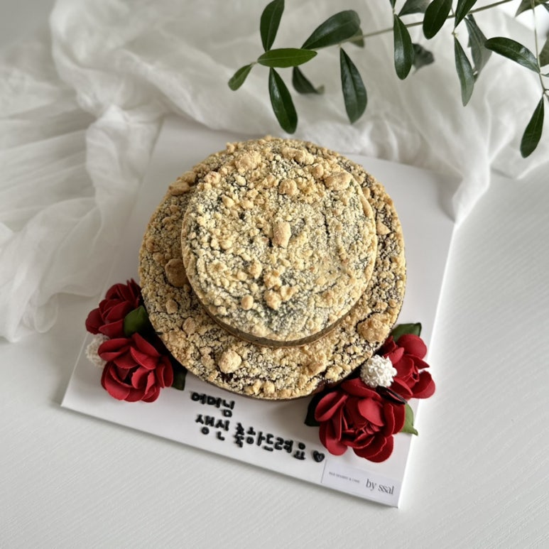

원형·사각·하트 중 선택 가능. 앙금꽃 데코레이션을 올려 특별하게. 실온 보관이 가능하여 답례품, 선물용으로도 인기입니다. 떡 케이크가 부담스러우신 분들께 추천드려요.
| 옵션 | 가격 |
|---|---|
| 1단 (2호, 지름 18cm) | ₩35,000 |
| 기본 앙금꽃 추가 | +₩5,000 |
| 한가득 앙금꽃 추가 | +₩15,000 |
| 레터링 | +₩3,000 |
| 2단 추가 (미니 12cm) | +₩20,000 |
수제 사과조림
찐 단호박 & 완두콩
국내산 쑥 & 호두 & 팥
발로나초코 & 호두
흑미 & 무화과 & 호두